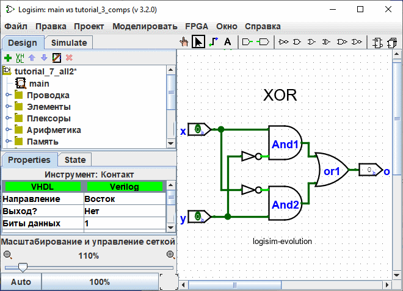
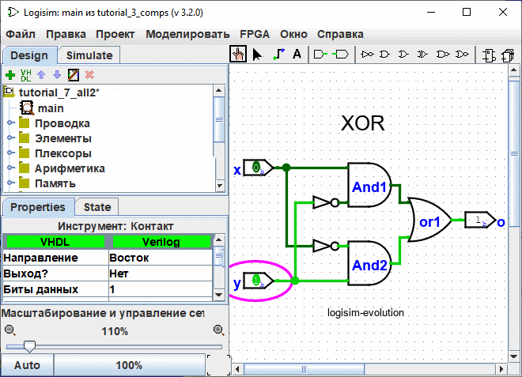

Предыдущий: Шаг 3: Добавление текста
Шаг 4: Тестирование схемы
Заключительным этапом создания схемы является её функциональное тестирование для проверки соответствия заданной логике. Среда Logisim-evolution осуществляет вычисление состояний непрерывно в фоновом режиме. Оценим текущее состояние собранной схемы.

По умолчанию на обоих входных контактах установлены логические нули (0), и на выходном контакте также отображается 0. Это подтверждает, что при комбинации входных сигналов 0 и 0 на выходе формируется ожидаемый логический 0.
Для проверки остальных комбинаций входных сигналов активируйте инструмент «Нажатие» (Poke Tool) ( ). Смена логического уровня на входе осуществляется простым кликом левой кнопки мыши по контакту. В качестве примера переключим состояние нижнего входа (y) на логическую 1.
). Смена логического уровня на входе осуществляется простым кликом левой кнопки мыши по контакту. В качестве примера переключим состояние нижнего входа (y) на логическую 1.

При изменении входных состояний система моделирования наглядно отображает процесс распространения логических уровней по цепям: светло-зелёный цвет проводника соответствует логической 1, а тёмно-зелёный — логическому 0. Как видно на иллюстрации, значение на выходном контакте корректно изменилось на 1.
Проведённые действия позволили верифицировать первые две строки таблицы истинности для логической функции «Исключающее ИЛИ» (XOR):
| x | y | x XOR y |
|---|---|---|
| 0 | 0 | 0 |
| 1 | 0 | 1 |
| 0 | 1 | 1 |
| 1 | 1 | 0 |
Используя инструмент «Нажатие», проверьте оставшиеся комбинации (1-0 и 1-1). Полное совпадение получаемых результатов со всеми строками таблицы истинности подтверждает абсолютную корректность работы спроектированной схемы.
Для сохранения результатов работы перейдите в главное меню | Файл |, где доступны стандартные функции сохранения проекта в файл, а также вывода чертежа на печать.